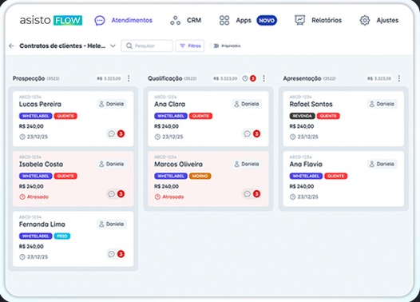

Organize, escale e transforme seu atendimento em vendas
O Asisto Flow é uma forma de estruturar o atendimento no WhatsApp para gerar controle, consistência e conversão.

O problema
Vendas se perdem por falta de organização no atendimento
No fim do dia, o problema não é o WhatsApp. É a forma como ele está sendo usado.
O Asisto Flow
Não é uma ferramenta. É uma forma de estruturar o atendimento
Para gerar controle, consistência e conversão. Na prática, ele:
- Organiza todas as conversas
- Automatiza o follow-up
- Dá visão clara para o gestor
- Cria um padrão de atendimento
Deixa de ser improviso. Passa a ser processo.

Como funciona
Como isso funciona no dia a dia
01
O cliente entra em contato
02
O Flow entende o momento da conversa
03
Responde, direciona e conduz automaticamente
04
O time entra no momento certo
05
Nenhum lead fica sem resposta
Para quem
Para quem faz sentido
O Flow faz sentido para negócios que:
Vendem pelo WhatsApp
Operações que perdem vendas por falta de follow-up
Negócios que querem visão clara do funil
Querem crescer sem perder controle e qualidade
Equipes que precisam trabalhar com metas e métricas
O que muda
O que muda na prática
Gerenciamento inteligente da comunicação
Confirmação de compromissos e lembretes
Organização de agenda e fluxos de atendimento
Conversas fluidas e adaptadas ao estilo da marca
Treinado para falar como a empresa fala
Disponibilidade contínua (24h)
Redução de tarefas repetitivas da equipe
Experiência mais humana e acolhedora
Planos
O Flow acompanha o momento da sua operação
START
Organização e controle do atendimento
- Atendimento organizado no WhatsApp
- Follow-up automático
- Conversas por etapas
- Visão clara para o gestor
PRO
Escala e conversão no atendimento
- Múltiplos atendentes ou agentes
- Atendimento multicanal
- Campanhas e disparos
- Pagamentos na conversa
PRIME
Integração com a operação da empresa
- Integração com sistemas
- Consulta de dados em tempo real
- Automação de processos
- Atendimento integrado
Quer ver como isso funcionaria na sua operação?
Fale com a gente pelo WhatsApp e entenda o melhor caminho para estruturar seu atendimento.